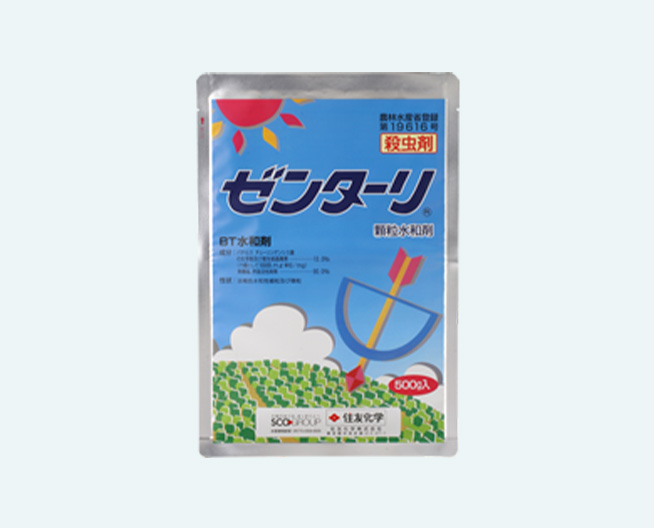
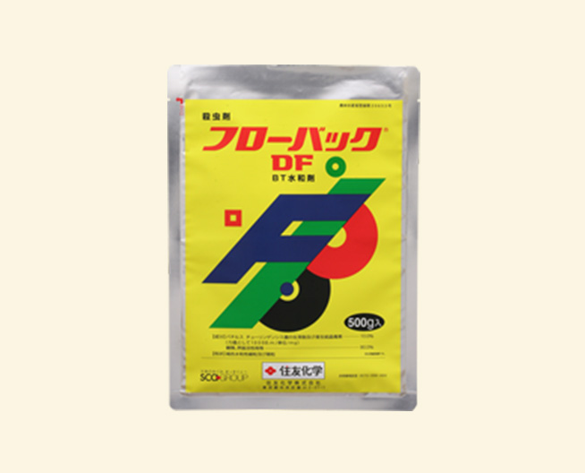
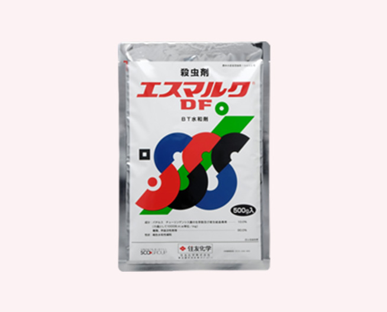

- 住友化学は、化学合成に加えて天然物由来の製品も
これまで培った技術を活かし開発してまいります。
Scroll down
生産安定性と低環境負荷を両立した
バイオラショナル製品に注力
農薬をはじめとする農業関連資材については、農作物の生産安定性を高めるだけでなく、生産者・消費者に対する安全性が高く、かつ環境負荷も低い製品が求められています。住友化学では、天然由来成分を活用した低環境負荷の微生物農薬・植物生長調整剤・微生物農業資材や、それらを用いた作物保護、作物の品質・収量向上のためのソリューションを「バイオラショナル製品」と定義し、Valent BioSciencesを中心に事業を展開しています。また、より環境負荷の低いボタニカル（植物由来）製品の研究開発にも積極的に取り組んでいます。
BT剤は、自然に存在するBT菌という微生物からできた殺虫剤です。化学農薬とは異なる作用機作でチョウ目害虫によく効く一方で、害虫の天敵や人間、環境にとって影響が少ない製品です。作物や害虫の種類に合わせて、効果的なBT剤を選ぶこともできます。また、有機JASに適合しており、特別栽培農産物の生産では農薬使用回数にカウントされません。BT剤は、野菜類をはじめ幅広い作物にて害虫防除を持続可能にしていくことが期待されています。
-
ゼンターリ
 商品詳細はこちら -
フローバックDF
 商品詳細はこちら -
エスマルクDF
 商品詳細はこちら